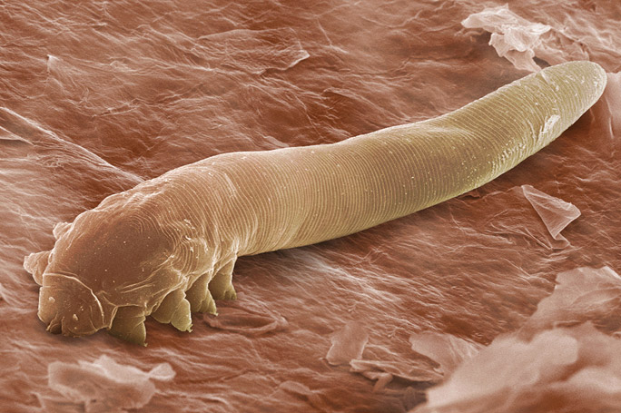

Biology Behind Toxoplasmosis The Toxoplasma Gondii parasite is different from other microscopic organisms. The organelles help the parasite survive with it’s 3-step complicated life cycle. For example, the parasite has an organelle called the conoid. It’s believed that the conoid is what helps the parasite penetrate through cell walls. The parasite’s main or definitive host are cats and other felines. When cats poop, the parasite changes form into an oocyst. It stays in the feces until it can find an intermediate host, which can be any other mammal. When inside of the intermediate host, they change into either tachyzoites. The tachyzoites replicate within the cell and differentiates itself into bradyzoites. The parasite then goes back and forth between the tachyzoite and bradyzoite stages until it spreads throughout the body. 
How it spreads The Toxoplasma Gondii parasite can spread several different ways. The parasite is also found in small rodents and animals. The parasite actually takes away mice instinct of fear and makes them attract to cats. When cats eat mice, they are also infected with the disease. Though cats usually shed the parasite for about two weeks, millions of T.Gondii can still live within the feces. Other mammals get infected by consuming food, soil, or water that was around cat feces.
What it does Symptoms really depends on how strong your immune system is. If you have a healthy immune system, then you may experience flu-like symptoms or no symptoms at all. You may not even know you have it. But for those with weak immune systems, they can experience seizures, headaches, blindness, etc. It’s especially worse for pregnant women, since the disease can get passed on to their babies and lead to miscarriages or birth defects. Sometimes, infants may not experience symptoms until later in their life, where they can experience mental disabilities, eye infections, hearing loss, and maybe other symptoms.